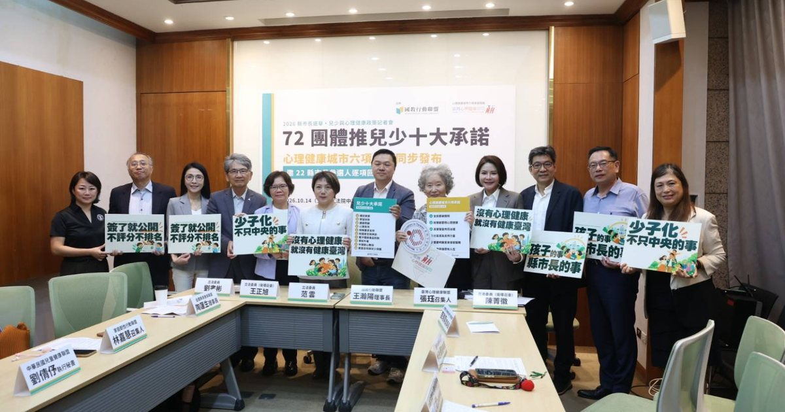
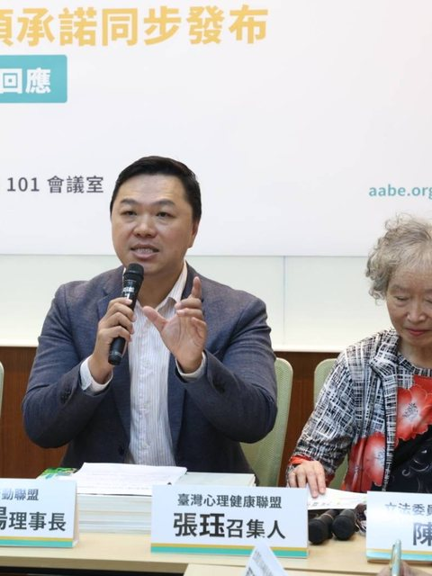
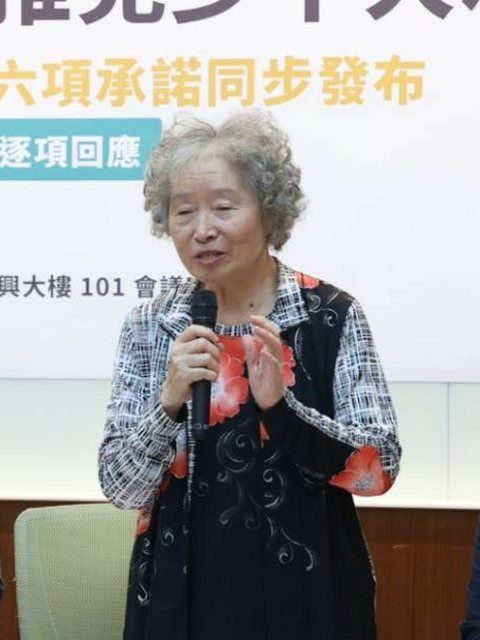
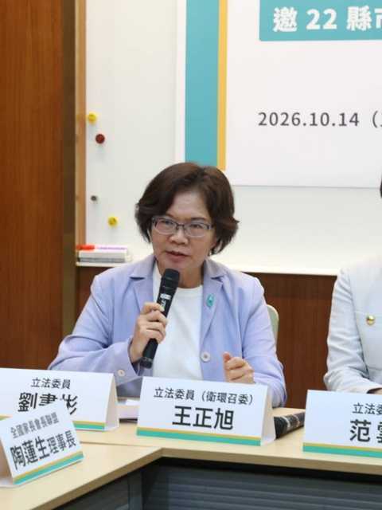

少子化不只中央的事 72團體邀22縣市打造友善城市
兒少十大、全年齡心理健康城市六項承諾同步發布 邀三黨立委協助轉達

臺灣少子化持續加劇。根據內政部戶政司最新統計，2026年1至9月全國出生人口僅69,446人，較去年同期減少14.67%。當出生的孩子愈來愈少，每一座城市更需要思考：除了鼓勵生育，能否提供讓家庭安心生活、孩子健康成長的環境？
國教行動聯盟（簡稱國教盟）聯合72個民間團體共同發起《兒少十大承諾書》，今（14）日在立法院舉辦記者會，並與臺灣心理健康聯盟同場發布《心理健康城市六項承諾書》，邀請全國22縣市長參選人逐項回應，期盼讓兒少、家庭與心理健康成為未來四年城市治理的重要方向。
少子化不只看出生數 更要看城市如何對待孩子與家庭
國教盟理事長王瀚陽表示：「少子化不能只問今年少生了多少孩子，也要問每座城市，為已經出生的孩子和正在努力生活的家庭，準備了什麼。對家長而言，真正重要的不是選舉時有多少補助承諾，而是老師能不能穩定、孩子學不會有沒有人幫、放學後有沒有安心的照顧，遇到困難時，這個城市能不能接得住。」

王瀚陽強調，育兒不應只被視為家庭的個別責任，而是涉及教育、社政、衛政及公共服務的城市治理課題。這次兒少十大承諾，從穩定師資、學習扶助、課後照顧，到特殊需求支持、校園安全、學校午餐與兒少保護，都是地方政府可以依自身條件逐步推動、讓家庭實際感受到改變的政策。
財劃法調整後 讓兒少與家庭成為城市的重要投資
《財政收支劃分法》修正後，115年度中央統籌分配稅款規模達8,841億元，較114年度大幅增加4,165億元；116年度依財政部預估稅收設算為9,725億元。各縣市實際財源、債務與支出責任雖有差異，但中央地方財政資源重新分配，也為施政優先順序帶來重新檢視的契機。
王瀚陽指出：「孩子與家庭不應只是社會福利預算中的一個項目，而應是城市長期發展的重要投資。地方政府每一項政策，都應該思考能不能讓孩子成長得更好、讓家庭生活得更安心，並把資源真正投入服務，而不是停留在政策口號。」
心理健康不只在下游救人 更要從上游打造幸福城市
臺灣心理健康聯盟召集人張珏指出，心理健康城市不是只有兒童、青少年或育兒家庭的議題，而是涵蓋全年齡市民的共同需求。從兒少的成長、成年人的工作與家庭壓力，到長者的社會參與與生活支持，都與城市政策密切相關。她強調，心理健康治理不能只在下游提供治療與危機救助，更要從中游的預防與心理韌性培養，走向上游改善貧窮、歧視與社會不平等，讓城市不只是適合養育孩子，更是讓每個年齡、每種生活處境的人都能安心生活、健康而有尊嚴地成長與老去。

臺灣心理健康聯盟《心理健康城市六項承諾書》因此不只關注諮商與醫療，更從日常心理健康促進、跨局處治理、當事人參與、社區支持、服務可及性及危機復原等面向，提出城市應承擔的責任。兩份承諾書由不同團體發起、分別簽署與公開追蹤。
從家庭、校園到不同需求的兒少 把城市支持真正做到位
全國家長會長聯盟理事長陶蓮生強調，「讓老師安心教學、家長放心託付、孩子穩定學習」，應是地方政府共同努力的目標。家庭韌性行動聯盟召集人林嘉慧指出，孩子的成長不只是家庭的責任，更需要學校、社區與政府共同支持。中華民國中小學校長協會副理事長簡信斌則提醒，政策不能只增加學校責任，更要同步提供人力、經費與專業支持。
針對不同需求兒少的支持，財團法人赤子心教育基金會董事長林玲華指出，孩子需要的協助不能等到正式鑑定完成才開始；台灣青少年神經多樣性行動協會理事長甄瑞興強調，支持不能只停在診間或教室，更要延伸到孩子每天的生活。中華公民人權協會理事長蔡沛華則表示：「孩子不只是等待被保護的對象，更是城市未來的參與者。」
此外，未出席的中華民國兒童健康聯盟理事長林志嘉及中華民國營養師公會全國聯合會，分別提出書面意見，關注友善育兒設施、兒少健康與保護，以及學校午餐營養品質、食品安全及專業人力等議題。
邀三黨立法委員接力轉達 讓政策承諾留下可檢視的進度
國民黨立法委員陳菁徽、民進黨立法委員王正旭與范雲、民眾黨立法委員劉書彬均出席記者會，接受兩份承諾書交付，並受邀協助轉達各黨提名的縣市長參選人。接受文件不代表立委或政黨已簽署或背書。國教盟也將依一致規則，直接寄送全國22縣市長參選人，包括無黨籍參選人。
「兒少十大承諾」要求簽署且當選的縣市長，於就任100日內公布所勾選項目的現況盤點、主責局處、服務處理時限、分年執行期程與經費規劃，之後每年公布執行結果。這是公開施政規劃的承諾，並非要求所有政策在100日內完成；「心理健康城市六項承諾」則依其各項條款及獨立公開機制追蹤。
兩份承諾書均於11月11日下午6時截止回覆，逾期仍接受；國教盟預定於11月18日公布「兒少十大承諾書」回覆結果。所有參選人適用一致規則：不評分、不排名、不推薦任何人。
以下為各立法委員於記者會現場的發言，屬其個人立場；本聯盟對所有參選人適用一致規則，不評分、不排名、不推薦任何人。
立法委員陳菁徽表示，身為婦產科醫師，也是三個孩子的母親，她深刻體會校園是兒少成長的重要生活場域。一座友善兒少的城市，應從教育品質、心理健康及校園安全著手，讓孩子在穩定且受到支持的環境中成長。
陳菁徽指出，穩定師資與教學一貫性是教育品質的基礎。面對學生不同的學習需求與心理健康狀況，政府應充實輔導及專業支持資源，同時推動教師行政減量、人力補充、專業訓練及待遇提升，不能將所有責任與壓力轉嫁給第一線教師。
針對電子煙及新興毒品透過網路與社群媒體接觸兒少的問題，她強調，政府不能只在孩子使用後才介入，更應由衛福部、內政部及教育部強化跨部會合作，從源頭供應、流通管道到校園防制全面著手，守護兒少健康與校園安全。

立法委員劉書彬表示，心理健康不只是醫療問題，更是教育、家庭與城市治理的重要課題。政府不能等到孩子出現憂鬱症狀、家庭陷入困境，才開始提供協助，而應將預防與支持融入地方施政，建立從校園、家庭、職場到社區的支持網絡。
劉書彬強調，地方政府應優先推動三項工作：充實校園輔導人力、減輕教師負擔；整合教育、衛生與社政資源，及早提供協助；建立公開透明的政策指標，讓承諾可以落實、成果能夠檢驗。她期待各縣市長參選人不分黨派，將兒少與心理健康承諾轉化為具體行動，讓每個孩子有人關心、每個家庭有人支持，每位市民都能安心生活。

立法委員王正旭表示，國教行動聯盟與臺灣心理健康聯盟等民間團體向各參選人提出兒少十大承諾書與心理健康城市六項承諾書，將兒少權益與心理健康拉升到城市治理的高度，是值得肯定的進步方向。
王正旭指出，「心理健康城市六項承諾」應從「醫療防堵」走向「系統預防」，也高度贊同「心理健康主流化」。心理健康不應被窄化為多聘幾個心理師或多開幾間精神科，而是所有城市政策，如教育、勞動、都市空間設計，都必須進行「心理健康影響評估」。王正旭也呼籲參選人不能只簽承諾，必須提出具體的財政規劃，例如基層社工與輔導人員的勞動條件是否改善、社區心理衛生中心的量能是否充足；沒有資源支撐的承諾只是空頭支票。
王正旭並指出，「兒少十大承諾」應從「家長焦慮」走向「兒少主體」，除了建構接住所有孩子的安全網，也必須強化校園與社區的連結。當孩子在學校出現霸凌、拒學等危機，學校、醫療與社區家庭必須有清晰的資訊銜接機制，不該讓家長或基層教師獨自承擔。推動校園安全或網癮防治時，也應兼顧《兒童權利公約》（CRC）的精神；保護兒少不應演變為過度管控或侵害隱私，而是要培力孩子具備自我保護與數位素養的能力。
王正旭強調，未來的教育與兒少政策，不能只有家長團體或專家學者的聲音，更必須建立讓兒少自己發聲的實質機制。孩子才是政策的直接影響者，聽見他們的真實需求，城市治理才會真正看見死角。
立法委員范雲表示，如何判斷一座城市的進步，不是只看有多少建設，而是要看這座城市，怎麼對待孩子。今天很榮幸代表民進黨，接下這份承諾書，這十大承諾，每一點都是孩子和家長最真實的需求，也是從中央到地方要努力的方向。投資兒少，就是投資台灣的未來，「我會和所有民進黨的縣市長候選人一起努力！」
結語：讓每個孩子安心長大
王瀚陽最後表示：「一座城市如何對待孩子與家庭，決定了這座城市的未來。當全國22縣市都願意把孩子的成長、家庭的需要放在施政核心，讓每個孩子都能安心長大、每個家庭都能獲得支持，這就不只是城市的進步，更是整個台灣的幸福與希望。」
公開平台
兒少十大承諾：https://aabe.org.tw/act/child-pledge/
各縣市簽署及回覆：https://aabe.org.tw/act/child-pledge/record/
心理健康城市六項承諾：https://aabe.org.tw/act/mental-health-city/
聯絡資訊
- 新聞聯絡人： 國教行動聯盟理事長 王瀚陽 0983-097-165
- 承諾書回覆窗口： 國教行動聯盟秘書長 李睿澤 0921-113-066
- 回覆信箱： action.a.e0626@gmail.com
參考資料｜供媒體查證
編號沿用新聞稿附件二〈參考資料〉，僅列本文引用者。
- 1. 國教行動聯盟（2026，10月14日）。《兒少十大承諾書》。兒少十大承諾公開平台。https://aabe.org.tw/act/child-pledge/record/download/
- 2. 臺灣心理健康聯盟、國教行動聯盟（2026，10月14日）。《2026 心理健康城市六項承諾書（縣市長參選人簽署版）》。心理健康城市專頁。https://aabe.org.tw/act/mental-health-city/
- 3. 國教行動聯盟（2026，10月7日）。〈共同發起團體名冊（截至2026年10月7日，共72個）〉。兒少十大承諾連署頁。https://aabe.org.tw/act/child-pledge/
- 4. 內政部戶政司（2026）。人口統計資料：出生數按性別及粗出生率（按登記日期）、總生育率及出生數、各縣市人口數按性別及單一年齡分（105年9月底、115年9月底）。https://www.ris.gov.tw/app/portal/346
- 5. 財政部（2025，8月29日）。〈115年度中央普通統籌稅款分配金額業於今（29）日通知地方政府〉（新聞稿；依115年度總預算案估算）。https://www.mof.gov.tw/singlehtml/384fb3077bb349ea973e7fc6f13b6974?cntId=84a987184f854d78be74ad15567cba62
- 5-1. 財政部國庫署（2026，8月24日）。〈116年度中央普通統籌稅款分配金額業於今（24）日通知地方政府〉（新聞稿；依116年度總預算案相關稅收推估）。https://www.mof.gov.tw/singlehtml/384fb3077bb349ea973e7fc6f13b6974?cntId=dce5398241224c9988c8ffe956a925b6
- 12. 中央選舉委員會（2026，9月7日）。〈115年地方公職人員選舉候選人登記名冊〉（直轄市長、縣（市）長，附表 1-1、3-1）。https://web.cec.gov.tw/central/article/64709
記者會文件
兩份承諾書、四份附件、各團體書面意見與政策資料全文，可直接閱讀與下載 PDF：
10/14 記者會文件引用格式（APA 7）：國教行動聯盟（2026，10 月 14 日）。少子化不只中央的事 72團體邀22縣市打造友善城市［新聞稿］。https://aabe.org.tw/press/2026-10-14-child-pledge-launch/